Se connecter
Vente WebConnexionTout le monde, sur l’appareil de son poste : tablette, caisse, comptoir de livraison, ordinateur ou téléphone du boss.

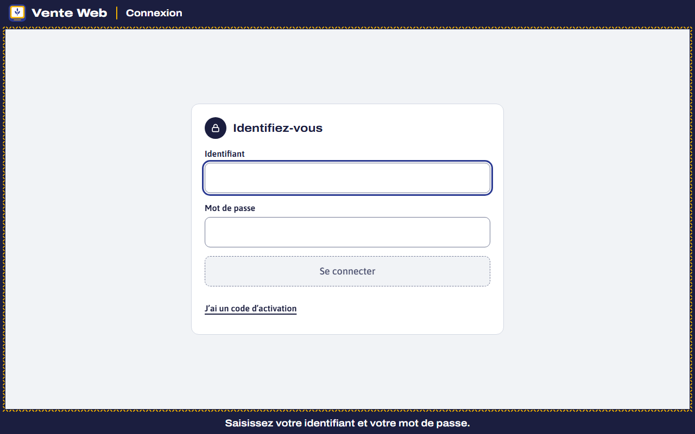
- Tapez votre Identifiant, celui que l’admin vous a donné.
- Tapez votre Mot de passe.
- Touchez Se connecter. Votre écran de travail s’ouvre, avec en haut un bandeau à la couleur de votre rôle, votre nom et Se déconnecter.
La première fois
- Mot de passe donné par l’admin : il ne sert qu’à entrer. L’application demande aussitôt Votre nouveau mot de passe ; choisissez-en un différent, assez long, que vous seul connaissez.
- Boss : l’admin ne connaît jamais votre mot de passe. Il vous remet un code d’activation. Touchez J’ai un code d’activation, tapez le code, choisissez votre mot de passe, puis Enregistrer mon mot de passe. Le code ne sert qu’une fois, avant son échéance.
Hors du magasin
Le boss et l’admin peuvent se connecter de l’extérieur. L’application demande alors en plus le Code de validation (application d’authentification) : les 6 chiffres affichés par l’application d’authentification de votre téléphone.
- Une personne n’a qu’une session ouverte : se connecter sur un autre appareil ferme la précédente.
- Sans activité pendant quelques minutes, l’écran se verrouille : « Écran verrouillé après N min d’inactivité : reconnectez-vous. » La durée est réglée par l’admin, par type d’appareil.
- Après plusieurs mots de passe faux, le compte est verrouillé pour quelques minutes. L’admin peut le Déverrouiller.
- Un compte qui a plusieurs rôles choisit son Rôle actif dans le bandeau du haut.
- Quittez toujours votre poste avec Se déconnecter.
Commercial
Vente WebVentesSur la tablette, avec le client : choisir le client, ajouter les articles, enregistrer le devis, puis valider la commande. Le client repart avec un ticket et attend son appel à la caisse.

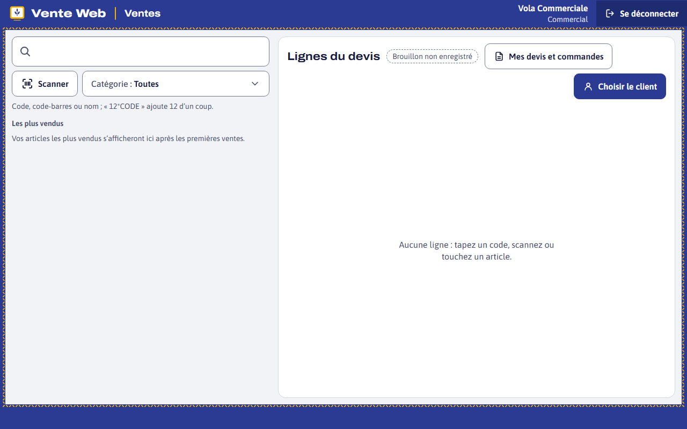
1. Choisir le client
- Touchez Choisir le client.
- Dans Téléphone ou nom du client, tapez au moins 3 chiffres du téléphone, ou le début du nom.
- Touchez le client dans la liste. Son nom s’affiche en haut du devis, avec la date de son Dernier achat : touchez-la pour voir ce qu’il a acheté la dernière fois.

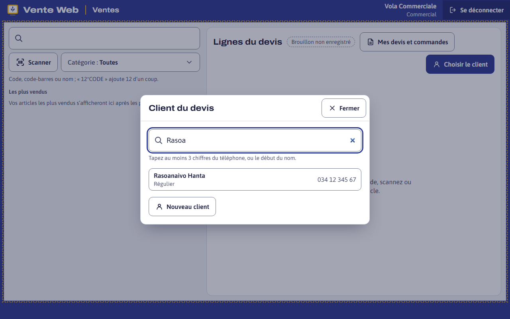
2. Ajouter les articles
Trois façons, au choix :
- Taper dans Rechercher un article un code, un code-barres ou le début du nom. Pour plusieurs pièces d’un coup, tapez la quantité, une étoile, puis le code : 12*SAV-001 ajoute 12 d’un coup.
- Scanner : touchez Scanner et présentez les codes-barres l’un après l’autre à la caméra, ou utilisez une douchette. Chaque article reconnu est ajouté.
- Toucher un article dans Les plus vendus ou À proposer (les articles que le boss veut mettre en avant), ou filtrer par Catégorie : Toutes.

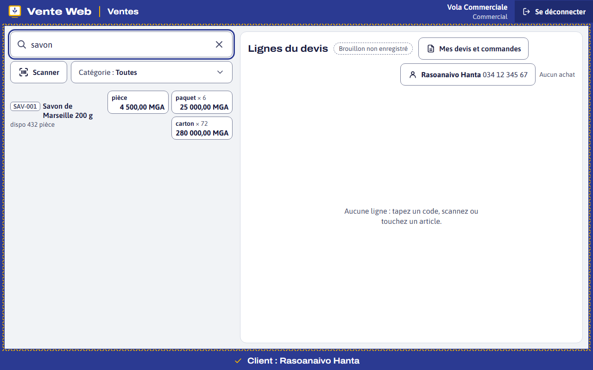
Un article qui se vend en plusieurs unités (la pièce, le paquet, le carton…) propose un bouton par unité : touchez celle que veut le client.

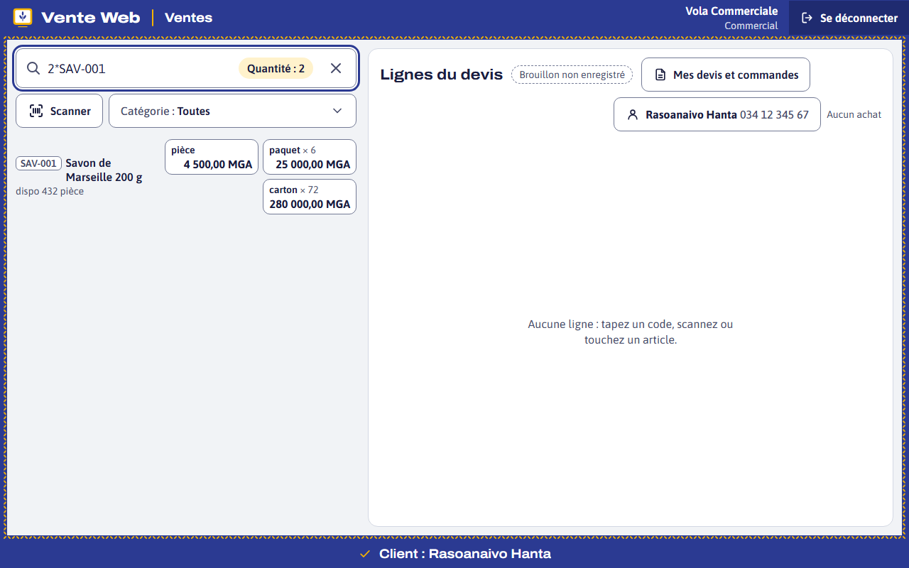
3. Vérifier le devis

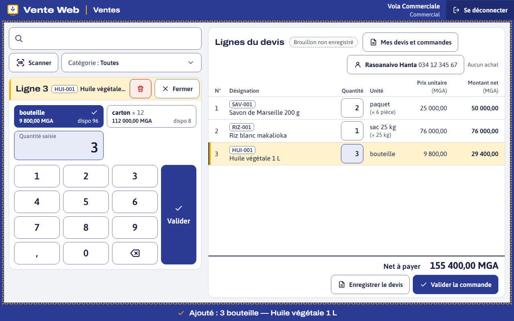
Pour changer une ligne, touchez sa quantité dans le tableau. Le pavé Ligne N s’ouvre à gauche : touchez une autre unité de vente ou tapez la quantité, puis Valider. La corbeille rouge retire la ligne du devis ; Fermer range le pavé.

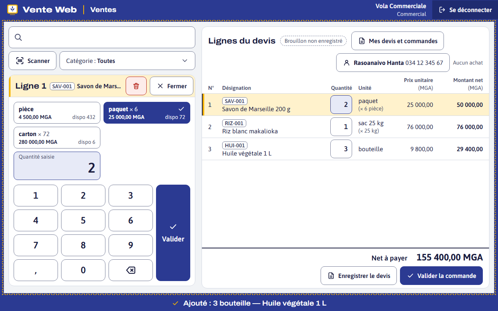
4. Enregistrer le devis
- Touchez Enregistrer le devis. Il reçoit un numéro (par exemple D-2026-000001).
- Si le client veut un papier, touchez Ouvrir le PDF et imprimez-le ou envoyez-le.

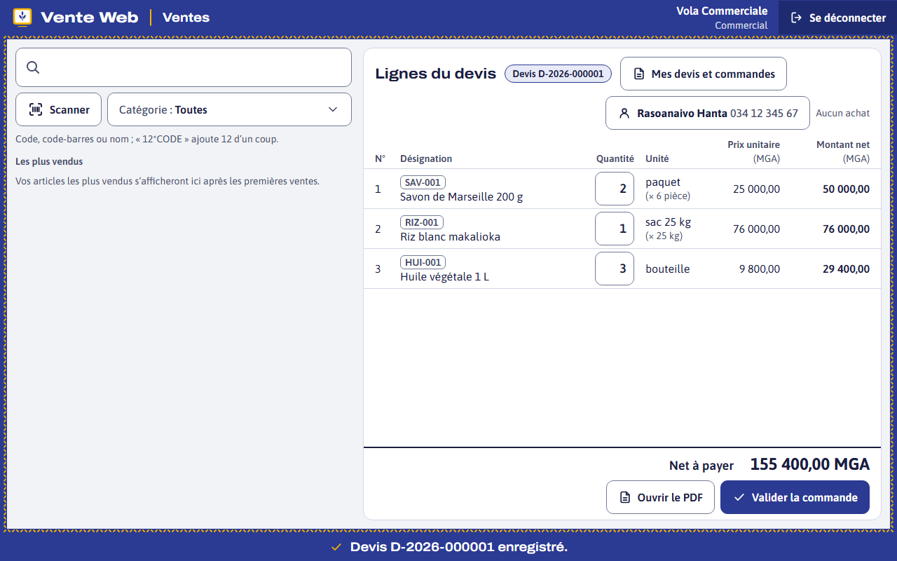
5. Valider la commande
- Quand le client est d’accord, touchez Valider la commande. La marchandise lui est réservée.
- Le grand ticket s’affiche : « Donnez ce ticket au client : il sera appelé à la caisse. » Dites-lui son numéro (ici A1).
- Touchez Nouveau devis pour le client suivant.

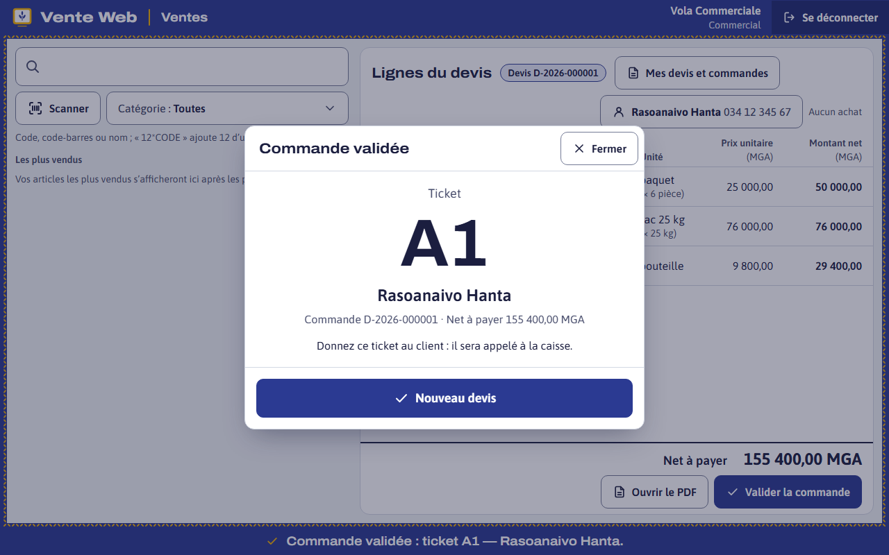
Si le stock ne suffit plus, la validation est refusée et la fenêtre Stock insuffisant indique, ligne par ligne, ce qui est disponible. Touchez Ramener la ligne N à … ou Retirer la ligne N, puis validez à nouveau.
6. Retrouver ses devis et commandes
Touchez Mes devis et commandes : la liste montre vos devis enregistrés et vos commandes du jour, avec leur état.

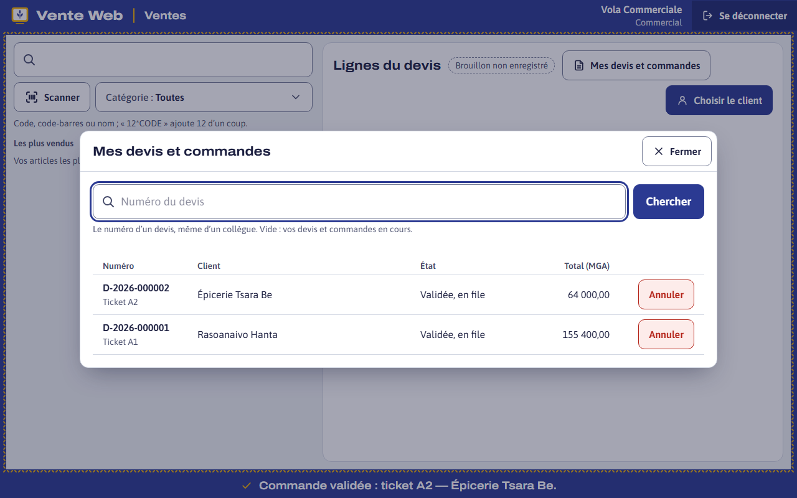
| État | Ce que cela veut dire | Ce que vous pouvez faire |
|---|---|---|
| Devis | Enregistré, pas encore validé. | Reprendre pour le modifier, l’enregistrer puis le valider. |
| Validée, en file | Le client attend son appel à la caisse. | Annuler si le client renonce. |
| À la caisse | Le caissier s’en occupe. | Rien : attendez. |
| Renvoyée par la caisse | Le caissier vous la renvoie pour une correction (un article à ajouter, par exemple). | Reprendre, corriger, enregistrer, valider. |
| Expirée | Non payée à la fin de la journée : son stock est libéré. | Réactiver : elle revient en fin de file à la caisse. |
7. Les paniers de la borne
Quand un client a préparé son panier à la borne libre-service, le bouton des paniers de la borne indique combien attendent. Ouvrez Paniers de la borne, touchez Prendre à côté du panier, appelez le client par son nom et vérifiez le panier avec lui. Il devient votre devis : continuez à l’étape 3.
- Quand la caisse appelle votre client et qu’il n’y a pas d’écran public, le bandeau du bas vous prévient : « Ticket A1 appelé à la caisse : prévenez … ».
- Par défaut, le commercial n’accorde pas de remise : le client la demande à la caisse, avant de payer. Si l’admin coche Le commercial peut accorder des remises, un bouton Remise apparaît sur chaque ligne et sur le total, dans les plafonds fixés par le boss.
- Les prix sont ceux du jour : si un prix a changé depuis l’ajout de la ligne, l’application l’indique à la validation. Vérifiez le nouveau net à payer avec le client, puis validez.
Caissier
Vente WebCaisseÀ la caisse : ouvrir la caisse, appeler les tickets, contrôler chaque commande avec le client, encaisser, remettre la facture ; le soir, clôturer.
1. Ouvrir la caisse
- Choisissez votre Caisse.
- Comptez les espèces du tiroir et tapez-les dans Fond de caisse (MGA).
- Touchez Ouvrir la caisse. Chaque paiement de la journée sera rattaché à cette caisse.

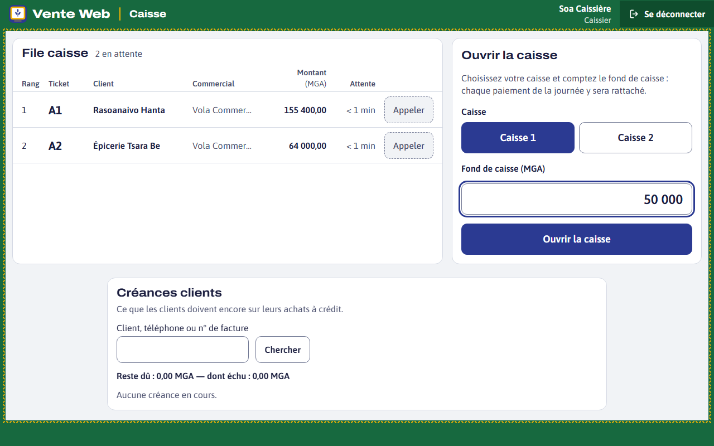
2. Appeler le client
La File caisse liste les commandes validées dans l’ordre d’arrivée : rang, ticket, client, commercial, montant, temps d’attente. Une commande Prioritaire passe devant.

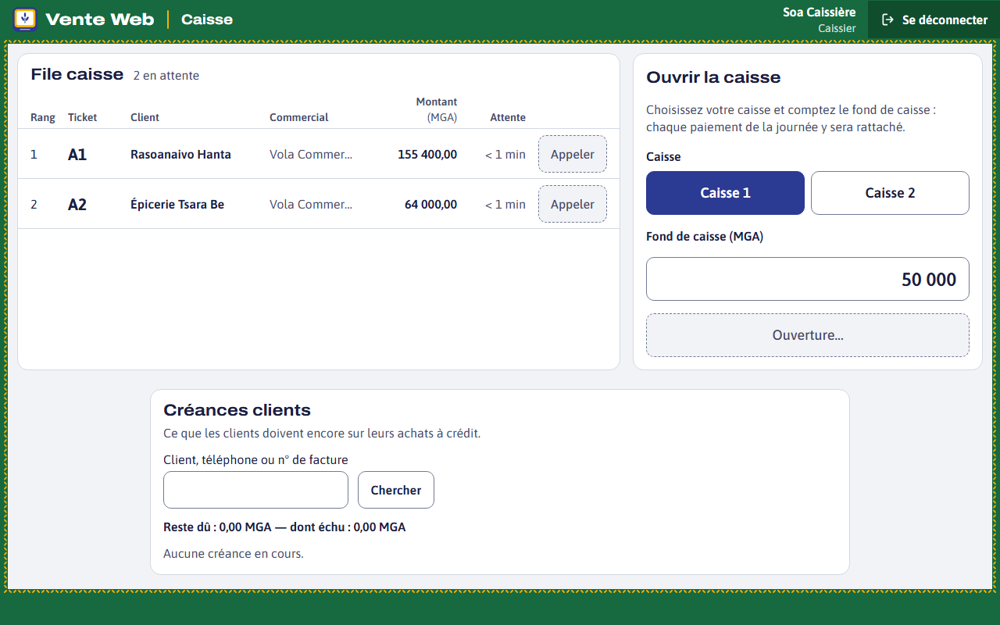
- Touchez Appeler le suivant (ou Appeler A1 sur une ligne précise). Le ticket s’affiche sur l’écran public, avec un son.
- Annoncez le ticket et le nom du client à voix haute s’il n’y a pas d’écran.
- Si personne ne vient, touchez Client absent : la commande repart en fin de file.

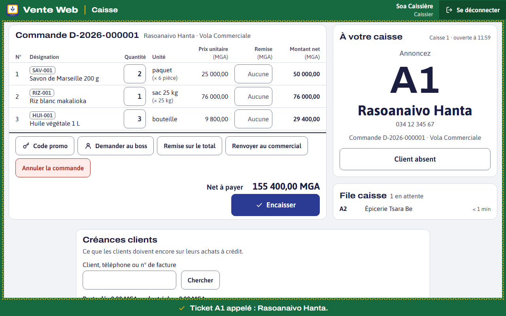
3. Contrôler la commande avec le client
- Moins d’articles : touchez la quantité de la ligne et tapez la nouvelle. Une quantité ne peut que baisser ; pour ajouter un article, renvoyez la commande au commercial.
- Une remise : touchez la case Aucune de la colonne Remise (remise sur la ligne) ou Remise sur le total. Choisissez % ou MGA, tapez la valeur, Appliquer. L’application affiche le maximum permis (« Au plus … ») : ce sont les plafonds du boss.
- Remises prévues : si une règle du boss s’applique (quantité, type de client, promotion), une étiquette remise prévue apparaît. Touchez Appliquer les remises prévues si le client le demande.
- Code promo : le client présente un code (par exemple R7K4-29QP) ; touchez Code promo, tapez-le, Appliquer le code. Il ne sert qu’une fois.
- Un article à ajouter ou à changer : Renvoyer au commercial. La commande garde son ticket et sa place dans la file.
- Le client renonce : Annuler la commande, avec un motif obligatoire. Le stock réservé est libéré.

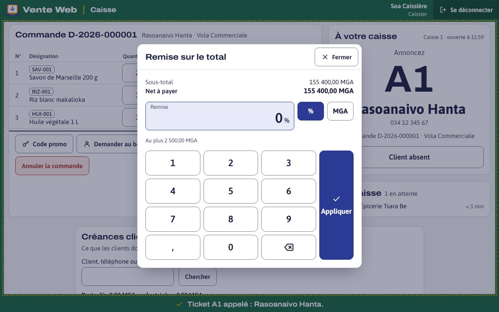
4. Demander une remise au boss
Quand le client veut plus que le plafond :
- Touchez Demander au boss.
- Remplissez seulement ce que le client demande : une remise sur un ou plusieurs articles, et/ou sur le Total de la commande, en % ou en MGA. Laissez vide le reste.
- Choisissez le motif dans Choisir le motif, ajoutez si besoin une note, puis Envoyer au boss.

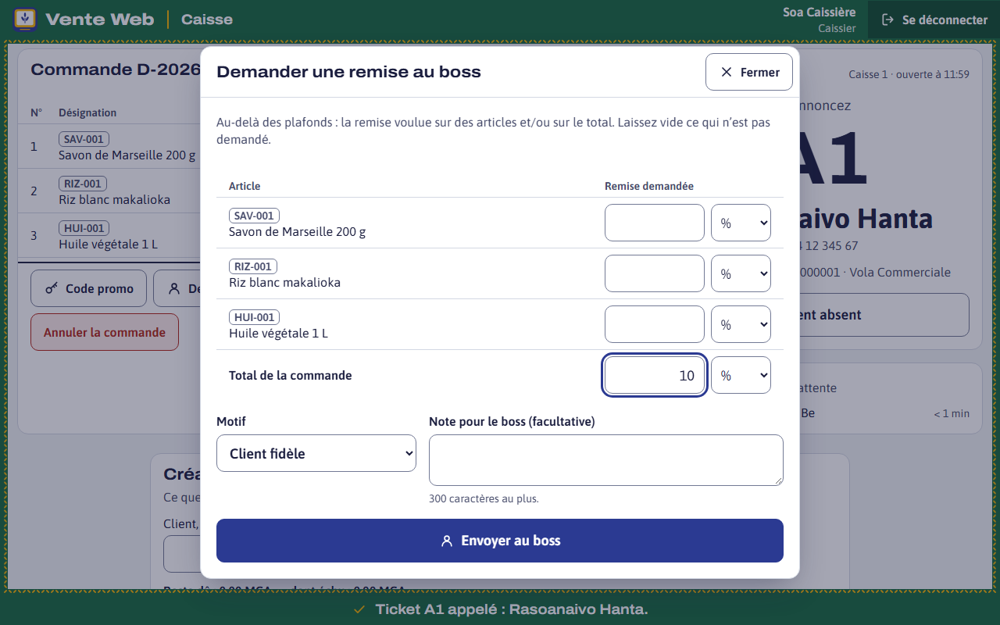
Le paiement attend sa réponse. Pendant ce temps, vous pouvez Remettre en attente le ticket (il garde sa place) et appeler le suivant.

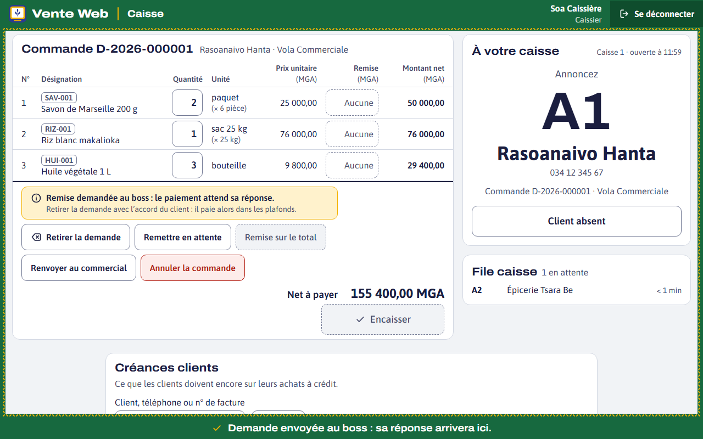

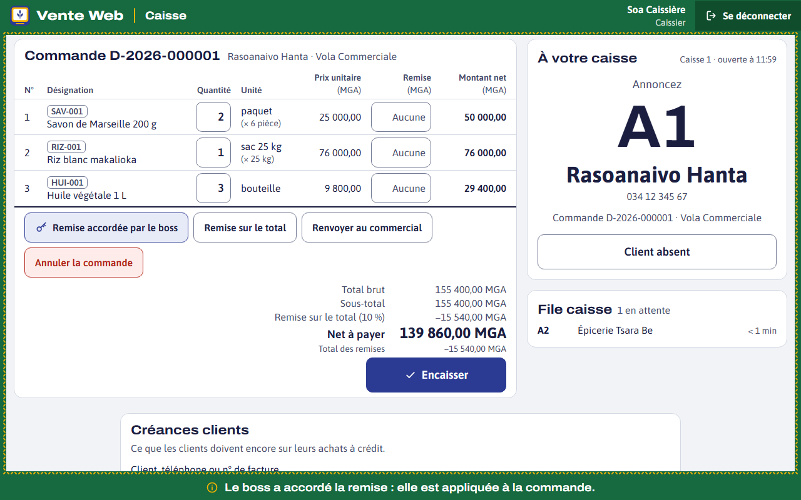
5. Encaisser
- Touchez Encaisser.
- Choisissez le Moyen de paiement : Espèces, MVola, Orange Money, Airtel Money, Carte bancaire, Virement, Chèque, À crédit ou Traite.
- Pour tout moyen sauf les espèces et le crédit, tapez la Référence de la transaction (obligatoire) ; pour un chèque ou une traite, aussi la banque ou l’échéance.
- Le client paie en plusieurs fois ? Ajouter un moyen de paiement et répartissez le montant. Le total doit faire exactement le net à payer.
- En espèces, tapez le Montant reçu en espèces (MGA) : l’application calcule ce qu’il faut rendre.
- Touchez Encaisser …. La facture est créée, avec son numéro.

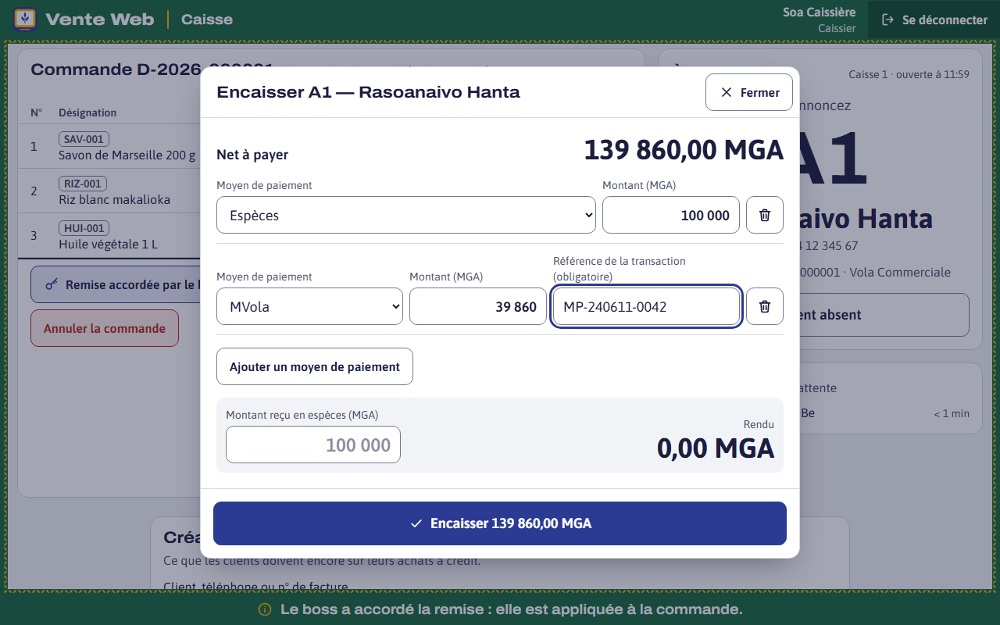

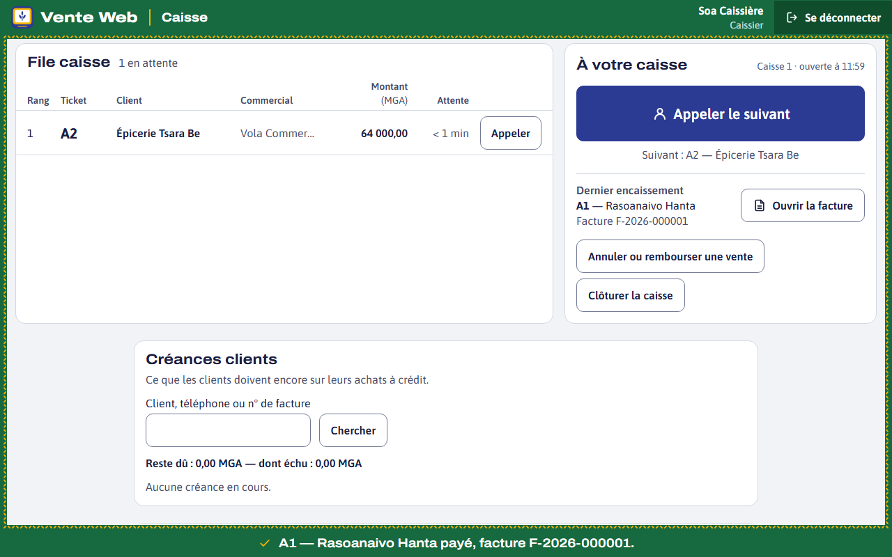
6. Annuler ou rembourser une vente payée
- Touchez Annuler ou rembourser une vente et tapez le Numéro de la facture.
- Indiquez le motif, le moyen de remboursement et, si besoin, sa référence.
- Le responsable valide sur place avec son identifiant et son mot de passe.
- Un avoir est émis : rendez le montant indiqué au client et remettez-lui l’avoir.
Une vente déjà livrée ne s’annule plus ici. Si le magasinier a livré partiellement, le reste à rembourser apparaît à la caisse : touchez Rembourser ….
7. Clôturer la caisse
- En fin de journée, touchez Clôturer la caisse. L’application montre les paiements par moyen et les Espèces attendues dans le tiroir.
- Comptez le tiroir et tapez le résultat dans Espèces comptées (MGA).
- S’il y a un Écart, expliquez-le dans Commentaire (obligatoire).
- Touchez Clôturer définitivement, puis Ouvrir le rapport de clôture pour l’imprimer.

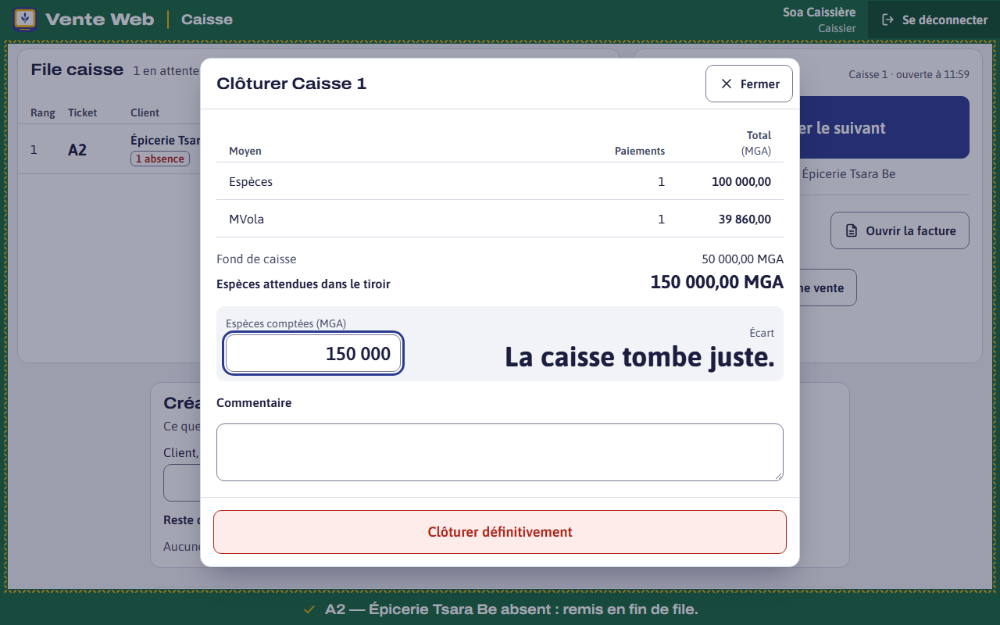
- Le panneau Créances clients montre ce que les clients doivent encore sur leurs achats à crédit. La vente à crédit n’est possible que dans les conditions fixées par le boss.
- Si l’admin a réglé un arrondi des espèces, le net à payer en espèces est arrondi et l’application l’indique.
Magasinier
Vente WebLivraisonAu comptoir de livraison : prendre une commande payée, la préparer, appeler le client et lui remettre chaque ligne. Plusieurs magasiniers travaillent en même temps, chacun à son comptoir.

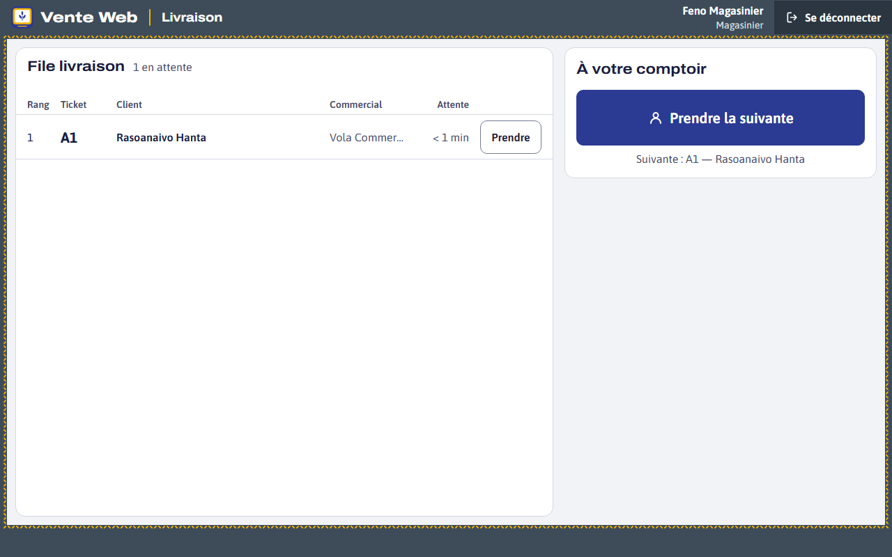
- Touchez Prendre la suivante (ou Prendre A1). La commande est à vous : les autres comptoirs ne la voient plus à prendre.
- Préparez la marchandise avec la liste affichée : quantité, unité, désignation.
- Touchez Commande prête : appeler le client. Le ticket s’affiche sur l’écran public.
- Remettez chaque ligne au client et cochez-la (Ligne N remise).
- Quand tout est coché, touchez Livrer. Le stock sort à ce moment.

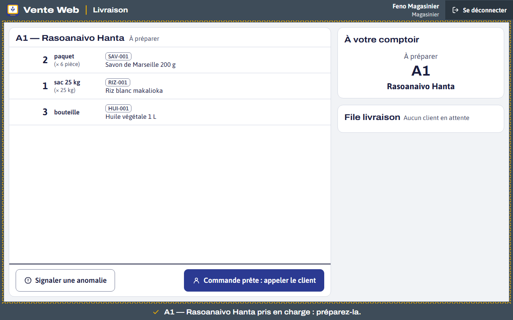

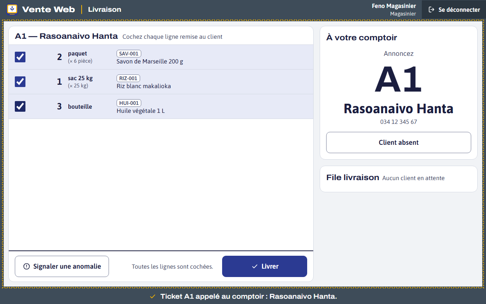
Touchez Signaler une anomalie. Pour chaque ligne touchée, indiquez la quantité Non remis et la cause (manquant, abîmé), puis Signaler au responsable. Le responsable décide : remettre en file ou livrer partiellement. Vous pouvez prendre la commande suivante.
Si le client ne vient pas, Client absent remet la commande en fin de file.
Écran public et borne
Sans compteL’écran public
Un téléviseur ou un écran dans la salle affiche les tickets appelés : à gauche la caisse, à droite la livraison, avec le poste où se présenter. Il ne demande aucun compte.

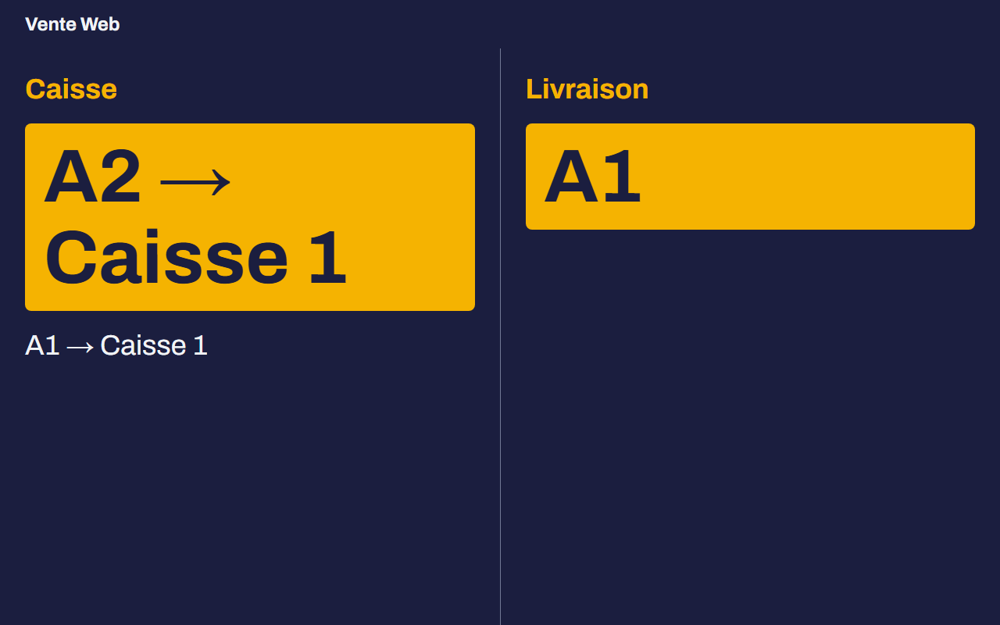
- L’admin déclare un poste de type Écran public et copie son Adresse de l’écran.
- Ouvrez cette adresse dans le navigateur de l’écran, en plein écran.
- Touchez une fois Activer le son : chaque appel sonne.
La borne libre-service
Une tablette en libre-service à l’entrée : le client prépare seul son panier, un commercial le reprend ensuite.

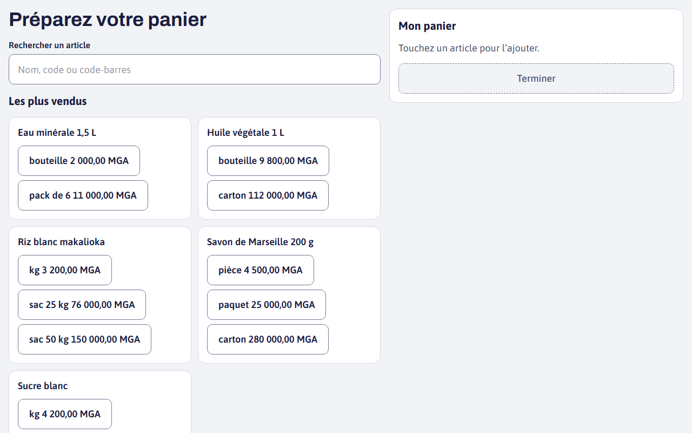
- Le client touche les articles pour les ajouter à Mon panier, ou les cherche par nom, code ou code-barres.
- Il touche Terminer, tape Votre nom et Votre téléphone, puis Envoyer le panier.
- La borne affiche son numéro de panier : « Un commercial va vous appeler. »
Mise en place : l’admin déclare un poste de type Borne libre-service et ouvre son Adresse de la borne sur la tablette.
Responsable
Vente WebSupervisionSurveiller les files, régler les problèmes du jour, tenir les articles, le stock et les clients, sortir les exports.

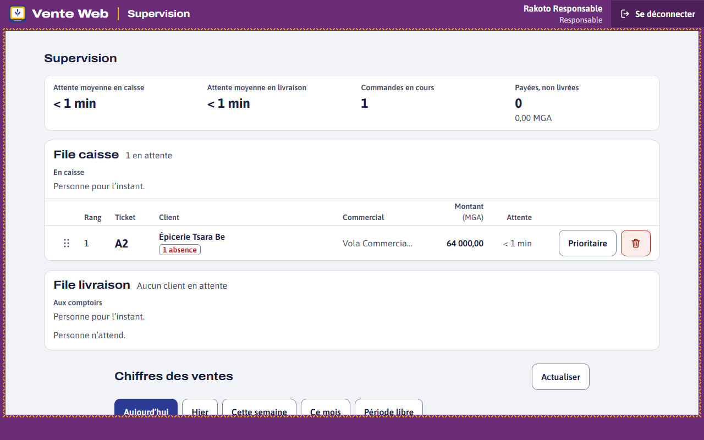
Les files
- Changer l’ordre : glissez la poignée d’une ligne (ou flèches haut et bas au clavier).
- Prioritaire : la commande passe devant (personne âgée, urgence…).
- Annuler une commande en file, avec un motif.
- Remettre en file une commande sortie de la file.
Anomalies de livraison
Quand un magasinier signale un article manquant ou abîmé, la commande attend votre décision, sa marchandise toujours réservée : Remettre en file (une fois l’article trouvé) ou Livrer partiellement (le client se fait rembourser le reste à la caisse).
Stock

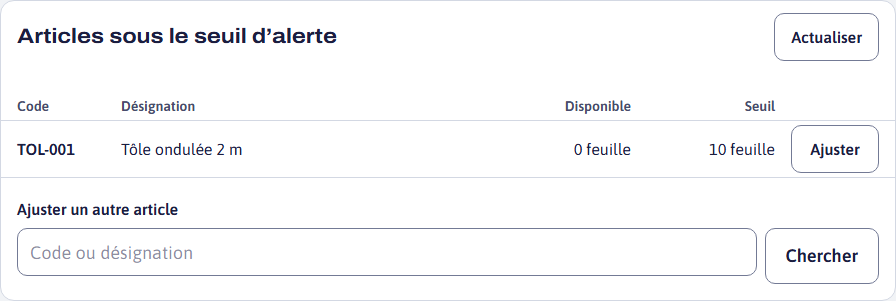
Articles et prix

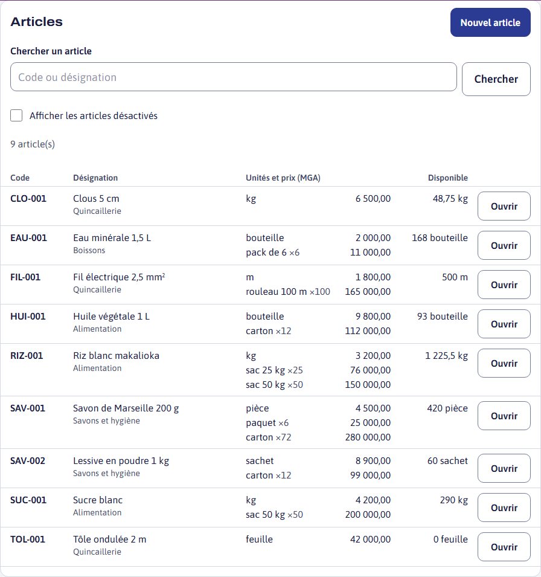

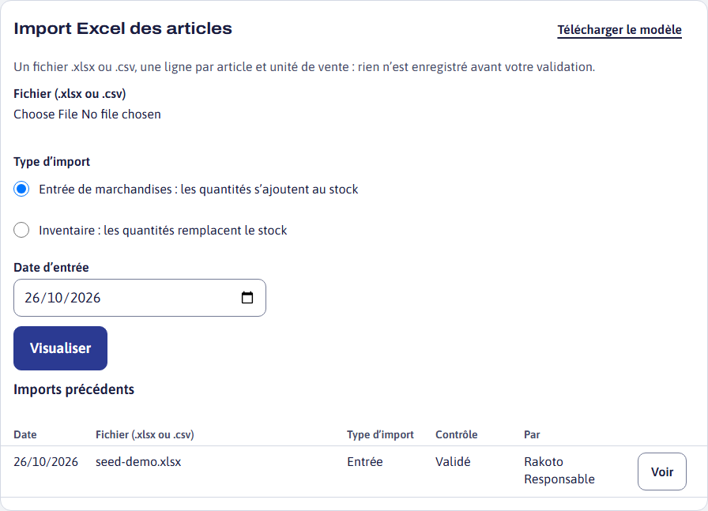
Clients

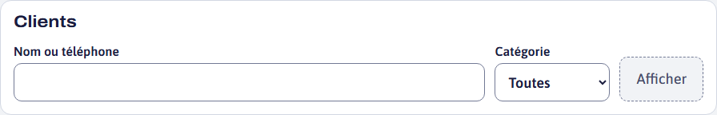
Exports et journal

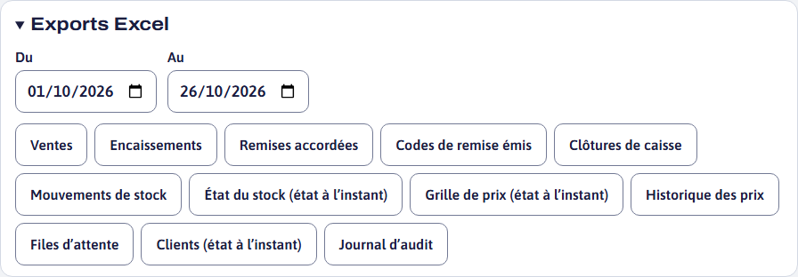

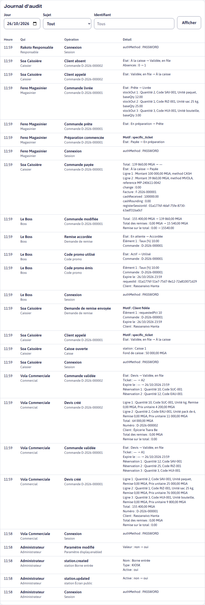
Plus bas sur la page : les Chiffres des ventes (comme le boss) et les caisses du jour avec leur rapport de clôture.
Boss
Vente WebTableau de bordÀ distance ou au magasin : répondre aux demandes de remise, suivre les ventes, fixer les plafonds, les règles de remise, les codes promo et les articles à proposer.

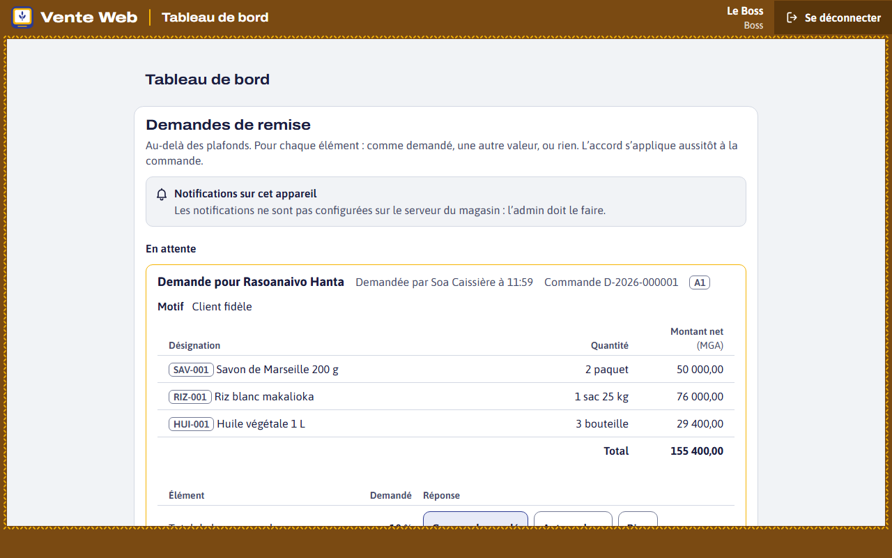
1. Répondre à une demande de remise

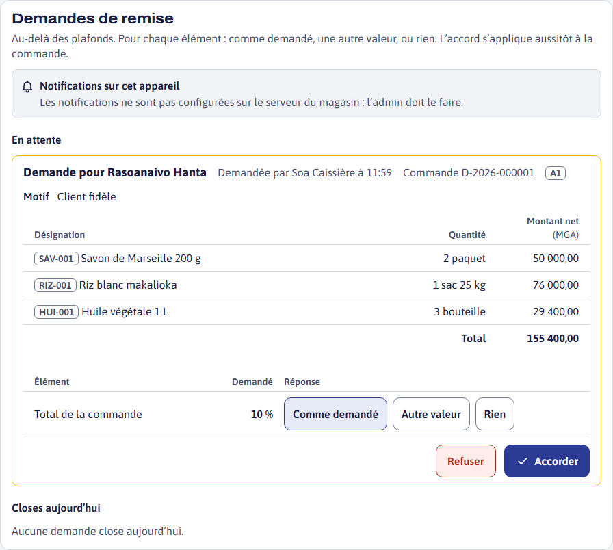
- Pour chaque élément demandé, choisissez Comme demandé, Autre valeur (tapez la vôtre) ou Rien.
- Touchez Accorder : la remise s’applique aussitôt à la commande, à la caisse. Ou touchez Refuser.
2. Être prévenu sur son téléphone
Dans Notifications sur cet appareil, touchez Activer les notifications, puis Envoyer un essai. Chaque demande arrive alors, même application fermée.
Ajoutez d’abord l’application à l’écran d’accueil (Partager, puis « Sur l’écran d’accueil »), ouvrez-la de là, puis activez les notifications. Avant de prêter l’appareil, touchez Désactiver.
3. Suivre les ventes

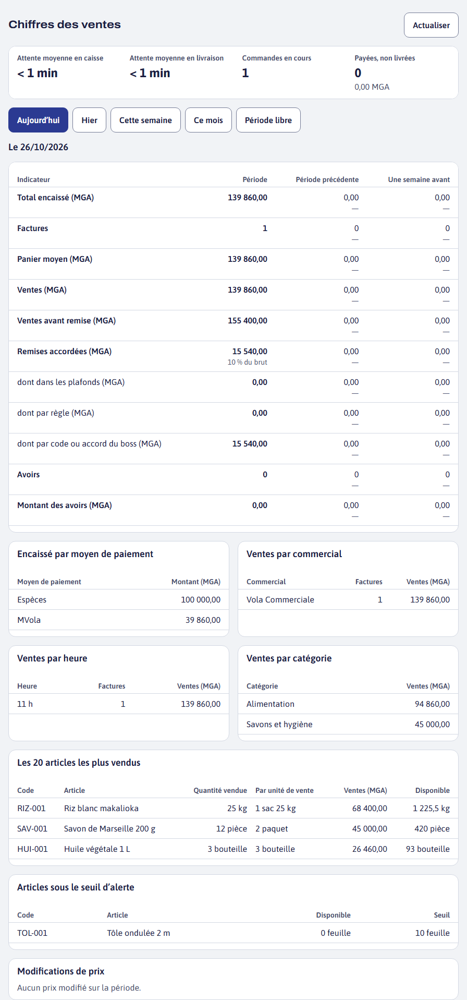
4. Fixer les plafonds de remise

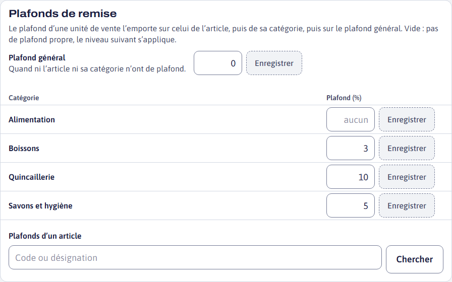
5. Prévoir des remises

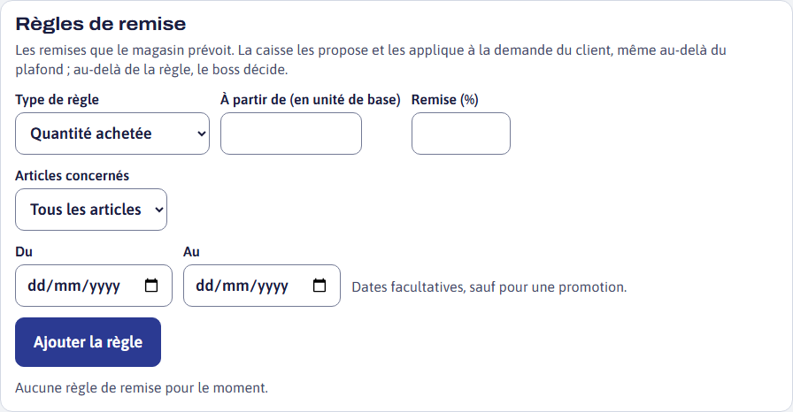
6. Émettre un code promo

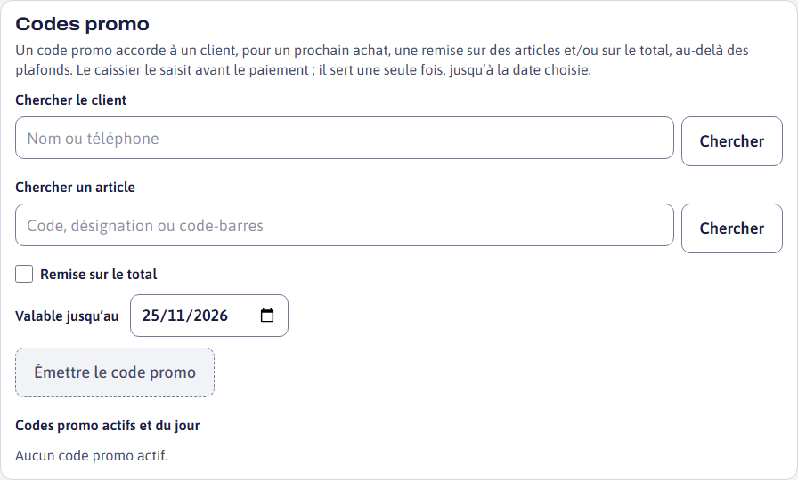
7. Mettre des articles en avant

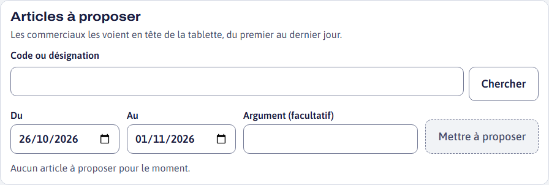
- Conditions de crédit : l’encours maximal et le délai de paiement par type ou catégorie de client. Sans condition, la caisse ne vend pas à crédit.
- Créances clients : ce que les clients doivent encore.
- Durée de réservation : combien de jours une commande validée garde sa marchandise (0 : jusqu’à la fin de la journée), en général ou pour un client.
Admin
Vente WebAdministrationCréer les comptes du personnel, déclarer et appairer les appareils, régler les paramètres du magasin.

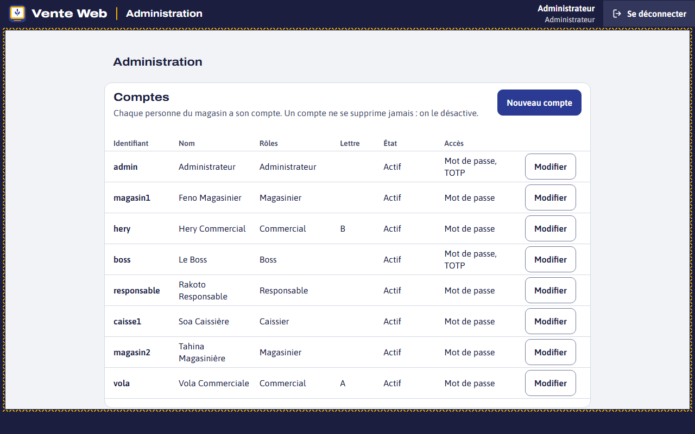
1. Les comptes

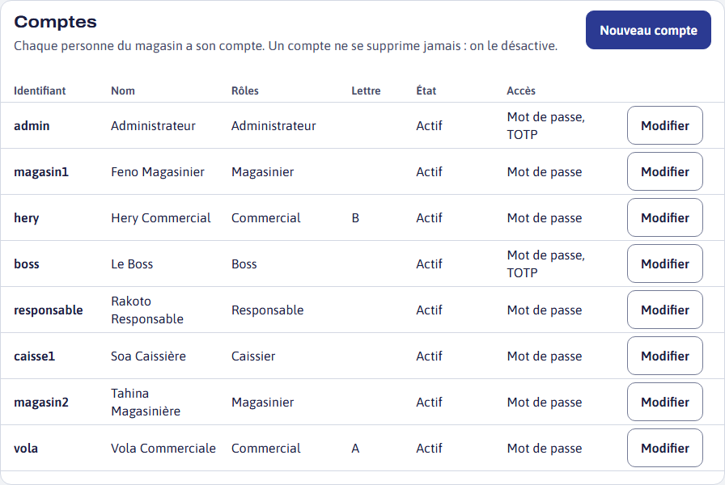
- Dans Nouveau compte, tapez l’Identifiant (sans espace) et le Nom complet, cochez le ou les rôles.
- Pour un commercial, donnez une Lettre de ticket qu’aucun autre commercial actif n’a.
- Créer le compte, puis Définir le mot de passe et remettez-le à la personne : elle en choisira un nouveau à sa première connexion.
- Pour le boss, Créer un code d’activation à la place : le boss choisit lui-même son mot de passe.
Sur un compte existant : Déverrouiller après trop d’essais, Effacer le TOTP si le téléphone d’authentification est perdu, Fermer ses sessions si un appareil a été oublié ouvert. Décocher Compte actif bloque la personne qui quitte le magasin.
2. Les postes du magasin

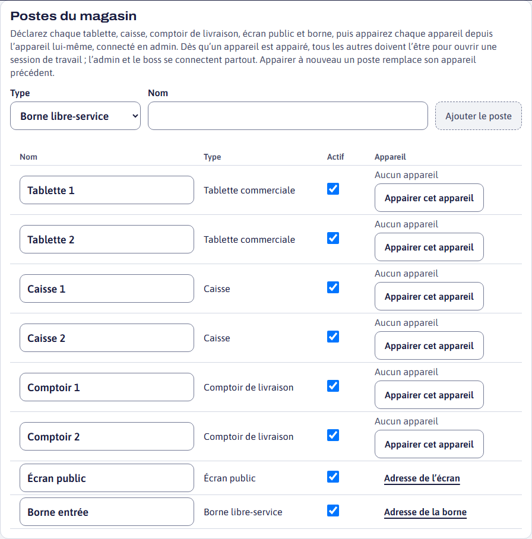
- Déclarez le poste : son nom et son type, puis Ajouter le poste.
- Sur l’appareil lui-même, connecté en admin, touchez Appairer cet appareil sur la ligne du poste.
- Pour l’écran public et la borne, ouvrez sur l’appareil l’Adresse de l’écran ou l’Adresse de la borne.
Dès qu’un appareil est appairé, tous les autres doivent l’être pour ouvrir une session de travail. L’admin et le boss, eux, se connectent partout. Appairer à nouveau un poste remplace son appareil précédent.
3. Les paramètres

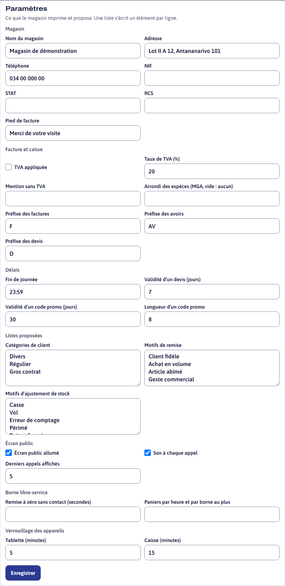
- Facture et caisse : nom, adresse, téléphone, NIF, STAT, RCS et pied de facture ; TVA (désactivée par défaut) ; arrondi des espèces ; préfixes des factures, avoirs et devis ; fin de journée ; validité d’un devis et d’un code promo.
- Listes proposées : catégories de client, motifs de remise, motifs d’ajustement de stock.
- Écran public : allumé ou non, son à chaque appel, nombre de derniers appels affichés.
- Borne : remise à zéro sans contact, nombre de paniers par heure.
- Verrouillage des appareils : minutes d’inactivité avant verrouillage, par type d’appareil.
Touchez Enregistrer en bas du panneau.
4. Les remises du commercial

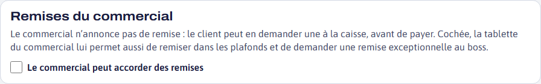
L’admin règle aussi la Durée de réservation, comme le boss.
Règles à connaître
Pour tous| Factures | Numérotées à la suite, sans trou. Un numéro n’est jamais réutilisé ni modifié. Une vente annulée donne un avoir, jamais une facture effacée. |
|---|---|
| Journal | Remises, paiements, annulations, mouvements de stock et corrections sont inscrits : qui, quand, quoi, avant et après. Rien ne s’efface. |
| Stock | Réservé quand le commercial valide la commande, sorti quand le magasinier livre. Une commande non payée à la fin de sa durée de réservation libère son stock. |
| Unités | Le stock se compte dans l’unité de base de l’article (la pièce, le kg…). Un paquet de 6 retire 6 pièces. |
| Prix | Un changement de prix crée un nouveau prix daté ; l’ancien reste dans l’historique. |
| Remises | Sur une ligne et/ou sur le total, en % ou en montant, jusqu’au plafond. Au-delà : une règle prévue, un code promo ou l’accord du boss. |
| Montants | En Ariary (MGA), deux décimales : 1 250 000,00 MGA. Dans un tableau, « (MGA) » figure une fois dans l’en-tête de la colonne. |
| TVA | Désactivée par défaut ; l’admin l’active dans les paramètres. |
Problèmes fréquents
Ce que dit l’écran, ce qu’il faut faire- « Serveur injoignable. Vérifiez la connexion au réseau du magasin. »
- L’appareil n’est plus sur le Wi-Fi du magasin, ou le serveur est éteint. Vérifiez le Wi-Fi, puis touchez Réessayer. Si rien ne change, prévenez le responsable.
- « Compte verrouillé après plusieurs échecs ; réessayez dans N min. »
- Attendez le délai, ou demandez à l’admin de Déverrouiller le compte.
- « Écran verrouillé après N min d’inactivité : reconnectez-vous. »
- Normal après une pause : reconnectez-vous. Le travail enregistré est conservé.
- La session ne s’ouvre pas sur une tablette ou une caisse
- L’appareil n’est sans doute pas appairé. L’admin doit l’appairer depuis l’appareil (Admin, Postes du magasin).
- « Stock insuffisant »
- Réduisez la quantité proposée ou retirez la ligne, puis validez à nouveau (voir Commercial, étape 5).
- « Les montants doivent faire exactement le net à payer. »
- À l’encaissement, la somme des moyens de paiement doit égaler le net à payer. Corrigez un montant ou retirez un moyen de trop.
- « Au plus … : au-delà, demandez la remise au boss. »
- La remise dépasse le plafond. Ramenez-la au maximum affiché, ou utilisez Demander au boss.
- « Écran public indisponible » ou « Borne indisponible »
- L’adresse n’est plus valable, le poste est désactivé, ou l’écran est éteint dans les paramètres. L’admin vérifie le poste et redonne l’adresse.
- « Les notifications ne sont pas configurées sur le serveur du magasin : l’admin doit le faire. »
- Les notifications du boss se règlent une fois, à l’installation du serveur. En attendant, le boss voit les demandes en ouvrant son tableau de bord.
- Le boss ne reçoit pas les notifications
- Elles sont bloquées par le navigateur ou le téléphone : autorisez-les dans ses réglages, rouvrez l’application, puis Envoyer un essai.